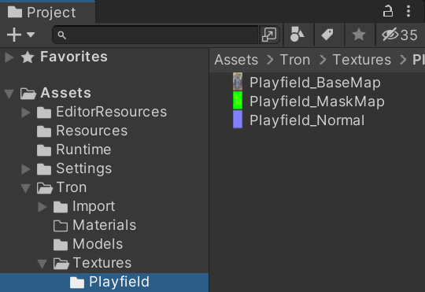
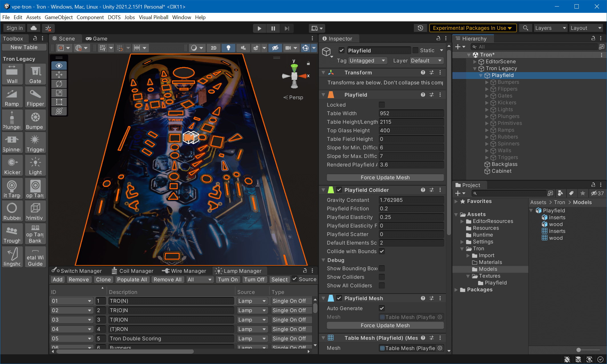
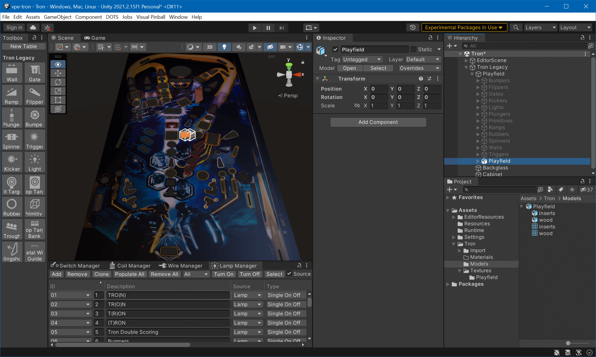
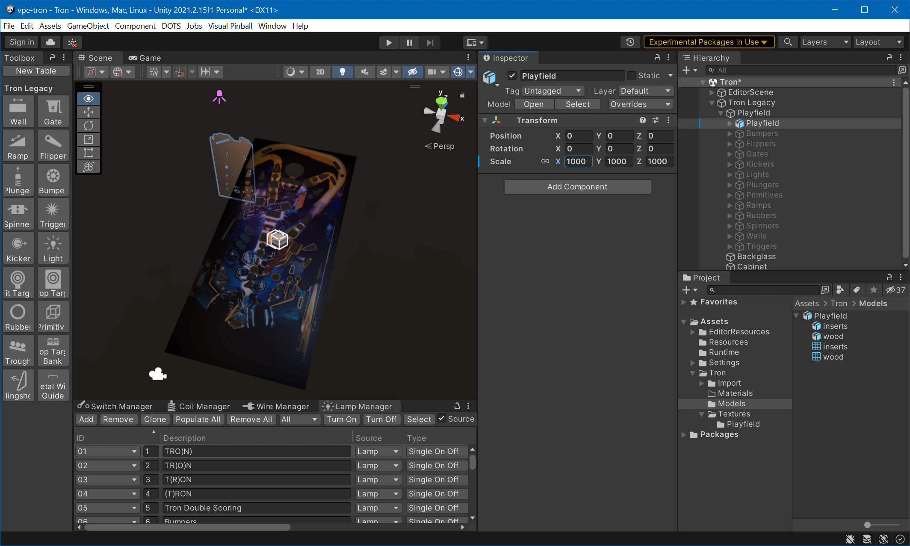
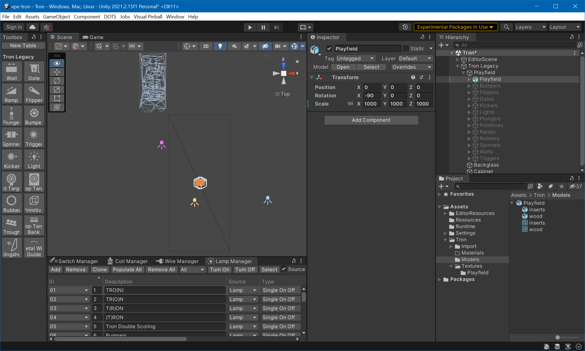
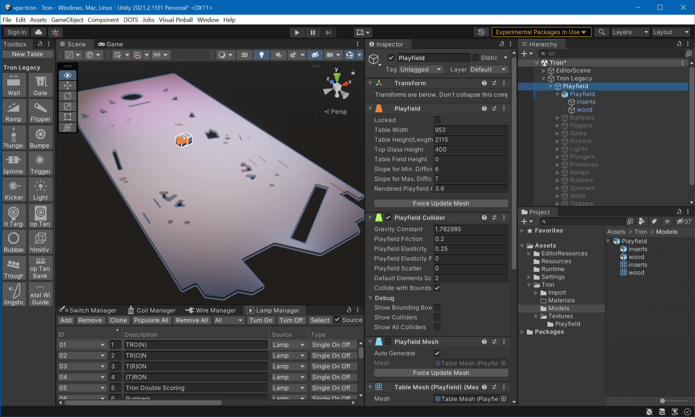
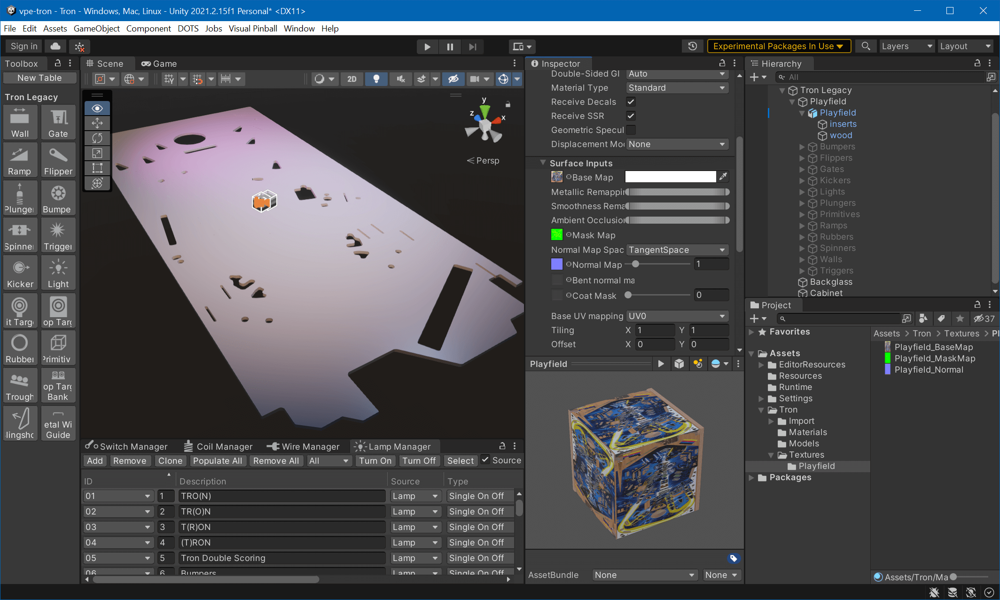
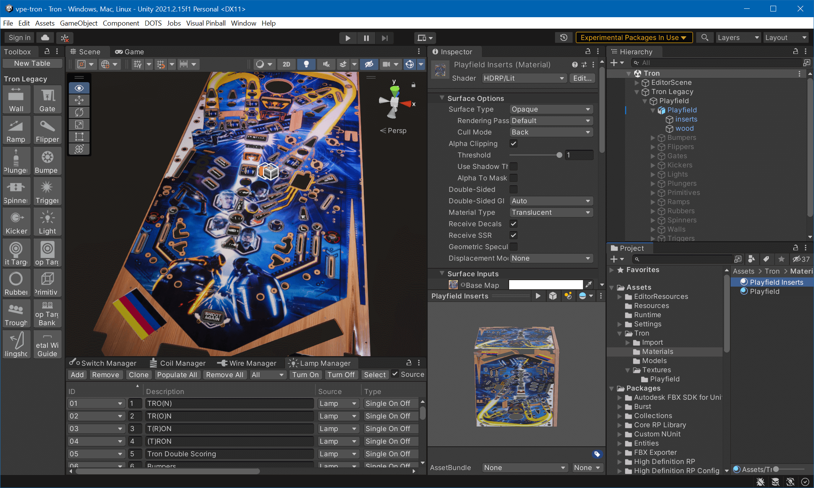
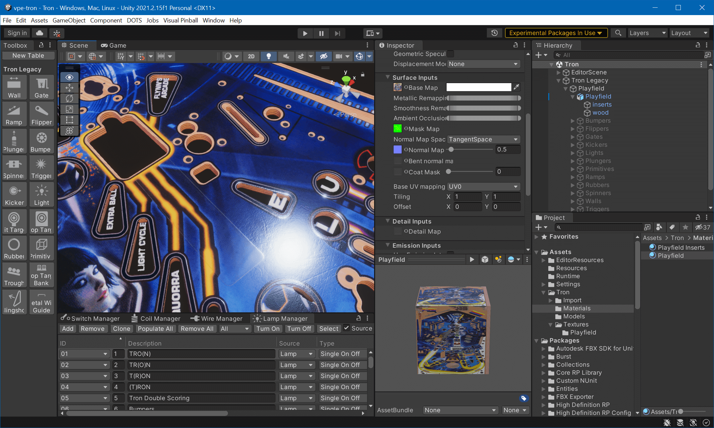

Import Into Unity
In the last part of this tutorial, we'll import and place the model into the Unity scene, create materials and assign them to the model.
Import Files
First, let's bring our files into the Unity project. There are four files that go into the Assets folder: The three maps and the FXB file. Copy the FBX file into Assets/Tron/Models and the textures into Assets/Tron/Textures/Playfield.
While the import options for the FBX file are fine, we need to adjust them for the textures.
Select the base texture and change the following options in the Inspector:
- Alpha Is Transparency: enabled
- Max Size:
4096(or8192if you exported at 8K in Substance)
Hit Apply. The mask map:
- sRGB (Color Texture): disabled
- Max Size:
4096(or8192if you exported at 8K in Substance)
Hit Apply. The normal map:
- Texture Type: Normal map
- Max Size:
4096(or8192if you exported at 8K in Substance) - Compression: High Quality
Hit Apply. Now we got our files ready. Let's bring in the model.
Import Model
The idea here is to put the model at the same position as the original playfield, and then hide the original playfield. Since this is the probably the first tutorial for many, we'll go a bit more into details of how Unity works and its quirks.
This is our starting point. The playfield is the original import from a VPX file, and all the other elements are hidden. You can hide elements by selecting them and unchecking the top-left checkbox in the Inspector.

Note
Crash course in Scene navigation
Move the camera like in a first-person shooter. Hold the right mouse button, then use the WASD keys for horizontal movement, Q and E for vertical movement. The mouse wheel changes the movement speed. Just panning the screen is done while holding the middle mouse button. Full documentation here.
In the Project panel you see our FBX file. It's a tree structure because Unity imported it and found out that it contains two objects and two meshes. Drag the entire Playfield object from the Project panel into the Hierarchy and drop it over the Playfield GameObject.

You'll probably see... nothing. That's because the scale of the playfield model is completely off the charts. While your new Playfield GameObject is selected (which, by the way, I'd like to move to the top among its siblings), move your mouse over the Scene (the 3D viewport), and press F for focus. Unity now zooms in (our out?) to your imported playfield.
It does it with an animation, so that gives you a hint whether the imported playfield is too large or too tiny to be seen. In our case, it zoomed in, but it's still too tiny to be visible. In this case, an approach is to click on the parent GameObject (also called Playfield), hit F to zoom out again, and start increasing the Scale of our imported model in the Inspector. Before doing that, click the little chain icon to lock the proportions.

At scale 1000 we're starting to see something. However, it's oriented incorrectly. Setting the X-rotation to -90 and Z to 180 fixes that. Now, we need to align the model over the existing one. For that, let's switch into orthogonal camera view by clicking on the small Persp icon in the top right corner of the Scene view, followed by a click on the Y axis of the 3D gizmo to switch to Top View. Click the shading mode icon and choose Wireframe. This allows you to align the playfield without anything being hidden.

Using the move (W) and scale (R) gizmos to align the imported playfield with the existing one.
Warning
When the camera is in orthogonal mode, it can happen that nothing is rendered or that meshes start disappearing. This is due to camera clipping. To fix, move the camera back by pressing S while holding the right mouse button.
Once done, switch the shading mode back to Shaded, select the parent Playfield GameObject in the Hierarchy and uncheck the Playfield Mesh component in the Inspector.

Now, to the fun part.
Create Materials
We'll need two materials. A solid one for the body and a translucent one for the insert overlays. Select (or create) the Materials folder under Assets in the Project window, right-click on the right and select Create -> Material. Name it Playfield.
In the Inspector, under Surface Inputs, you'll see multiple slots for maps. While the Playfield material is still selected, change to the Textures/Playfield folder where your maps are stored. Then, drag and drop each map to the corresponding slot in the Inspector. Your material should look like this:

In the Project view, switch back to Materials, select Playfield and hit CTRL+D to duplicate. Name the new material Playfield Inserts. While selected, change the Material Type in the Inspector from Standard to Translucent. Additionally, enable the Alpha Clipping checkbox.
Still in the inspector, scroll down to find Diffusion Profile (right below the maps under Surface Inputs). Then, in the Project window, expand Packages and navigate to Visual Pinball Engine (HDRP) -> Assets -> Settings -> Diffusion Profiles. Drag the Plastics profile into the material's diffusion profile slot in the Inspector.
Assign Materials
Select the wood GameObject. In the Inspector, inside the Mesh Renderer component, expand Materials and drag the Playfield material from the Project panel into the slot where currently DefaultHDMaterial is shown.
Select the inserts GameObject and do the same with the Playfield Inserts material.

This looks pretty good already, but when zooming in, the structure in the reflection is a bit too extreme. This is quickly fixed by decreasing the Normal Map parameter in both playfield materials. Here, 0.5 does its job just fine.

Future Changes
So, you're all happy with your playfield, when suddenly you realize that you need to change something. Here a few hints of what you'll need to do depending on what you need to change.
Material Updates - Updates in Substance Painter are the quickest - Make changes and re-export the textures, that's it. Unity will automatically pick up the changes.
Mask/Texture Corrections - These are pretty painless too - re-import the new image into Painter, then click the Resource Updater icon in the left toolbar and hit the Update button where it's orange. Then, re-export.
Missing Hole or any geometry changes - This is the annoying one. Since our workflow in Blender is destructive, you'll probably need to recreate the mesh. If you decide to fix the geometry of the existing mesh, make sure you update the wood mask accordingly. Before exporting to FBX, make sure you name your objects in Blender the same as before, so Substance Painter can pick them up. If you kept a material in Blender, its name must be the same too for Substance Painter to recognize it. Then, in Painter, select Edit -> Project Configuration -> Select... to update your model, and Painter will re-apply the layers on the new model. Finally, re-export the textures and copy the new FBX to Unity's asset folder.
That's It!
We hope you've enjoyed this tutorial. It might have been one of the first ones you went through. If you were stuck somewhere, please let us know in the forum so we can fix it. If you have improvements, use the button on the top right side on each page. More info about that here.
Enjoy, and we're looking forward to what you're coming up with!